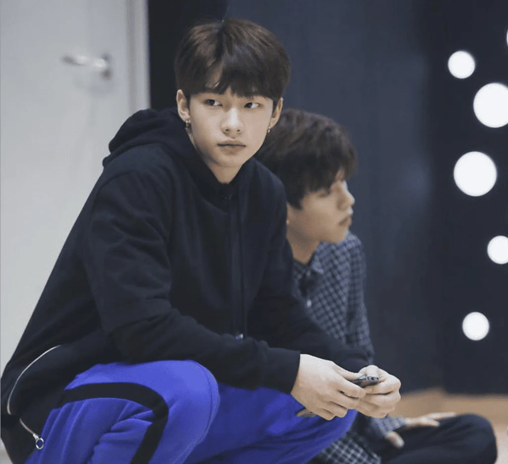
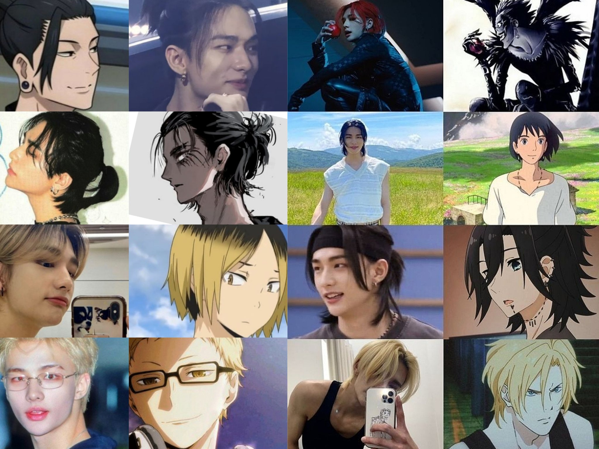
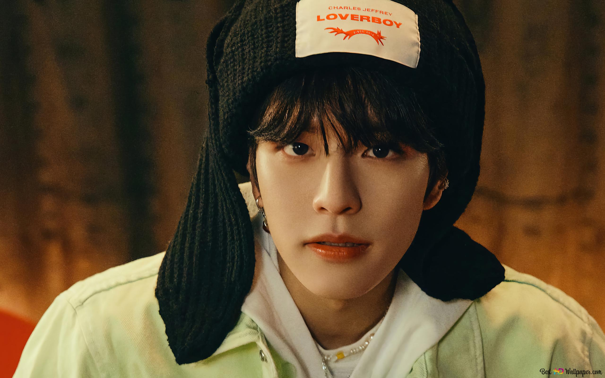

Líder
Bang Chan
Christopher Bang, conocido como Bang Chan, es bilingüe en inglés y coreano. Pasó 7 años en Australia antes de unirse a JYP Entertainment.

Descubre los secretos y curiosidades que no conocías sobre tus idols favoritos
Christopher Bang, conocido como Bang Chan, es bilingüe en inglés y coreano. Pasó 7 años en Australia antes de unirse a JYP Entertainment.
Antes de ser idol, Lee Know trabajó como bailarín de respaldo para BTS durante su gira "Wings". ¡Incluso apareció en algunos de sus videos musicales!
Changbin tiene una habilidad única para rapear extremadamente rápido. En una demostración, rapeó 10.8 sílabas por segundo, ¡casi rompiendo un récord!

VisualHyunjin es ambidiestro (puede usar ambas manos con igual habilidad). Aprendió a escribir con ambas manos para mejorar su coordinación como bailarín.
Han Jisung puede imitar perfectamente el sonido de una motocicleta. Esta habilidad apareció en el reality show de Stray Kids y dejó a todos impresionados.
Felix tiene la voz más grave de K-pop, con un registro vocal que llega hasta las 65Hz. Su voz es más grave que la mayoría de los cantantes masculinos adultos.
Seungmin es un ávido fanático del béisbol y puede recitar estadísticas completas de jugadores coreanos. ¡Incluso ha cantado el himno nacional en juegos profesionales!
I.N tiene un récord en JYP: fue el trainee más joven en debutar con la compañía a los 17 años. Originalmente audicionó como actor, pero fue reclutado como idol.
Chan es conocido por su increíble memoria. Puede recordar los cumpleaños de todos los STAYs que ha conocido y detalles específicos sobre ellos.
Felix tiene un ritual antes de cada presentación: come exactamente 5 piezas de chocolate. Dice que le da energía y le trae buena suerte.

VisualHyunjin colecciona figuras de anime y tiene más de 100 en su departamento. Su favorita es una edición limitada de Sailor Moon que le tomó 2 años conseguir.

VocalistaSeungmin tiene un oído musical perfecto. Puede identificar cualquier nota musical y reproducirla con su voz sin referencia. ¡Incluso corrige a los miembros cuando desafinan!